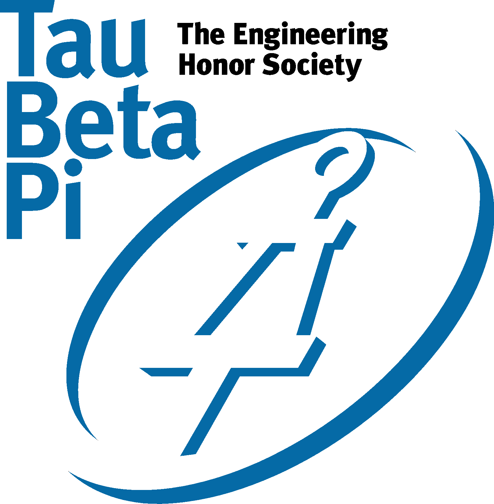

Alpha Eta Mu Beta is the honor society for biomedical
engineering.
EGC Representative:
Website
Email
American Institute of Aeronautics & Astronautics
As a club, we design, build, and fly model planes,
both recreationally and competitively.
EGC Representative:
Website
Email
American Institute of Chemical Engineers
The American Institute of Chemical Engineers (AIChE)
is a leading organization
for chemical engineering professionals, with more than
40,000 members from 93 countries
across the globe.
Alpha Pi Mu (APM)
American Society of Civil Engineers (ASCE)
American Society of Civil Engineers (ASCE) Rutgers Chapter
is an organization which is run by students who take pride in
Civil Engineering and benefiting the community.
American Society of Mechanical Engineers (ASME)
ASME is the acronym for the American Society of
Mechanical Engineers, a membership organization recognized
globally for its leadership in providing the engineering
community with technical content and a forum for information
exchange.
Chi Epsilon
Chi Epsilon is the National Civil Engineering Honor
Society dedicated to promoting
civil engineering as an “ideal profession.”
Engineers Without Borders
The Rutgers University Student Chapter of Engineers
Without Borders-USA is comprised of Rutgers students,
professional engineers, and faculty members joined
together to envision and create a better future
and a better world.
Rutgers Formula Racing
RFR is a club at Rutgers University whose objective is
to design and build a Formula "style" (open wheels) race
car each year and compete against other colleges from
around the world. Open to non-engineers.
Institute of Electrical and Electronics Engineers (IEEE)
Rutgers Institute of Electrical and Electronic
Engineers (Rutgers IEEE) is a student branch of the
world’s largest professional association dedicated
to advancing technological innovation.
Institute of Industrial Engineers (IIE)
The Rutgers University Institute of Industrial
Engineers is a student society that fosters a passion for
Industrial and Systems Engineering.
International Society for Phamaceutical Engineering (ISPE)
Material Advantage
Material Advantage is a student program specifically created
for the promotion of material science and engineering
Minority Engineering Education Task (MEET)
Our Mission Statement:
To increase the number of culturally responsible minority
engineers who excel academically, succeed professionally,
and positively impact the community. "I am...We are!"
Omega Chi Epsilon
Omega Chi Epsilon (OXE) is the National Honor Society
for Chemical Engineering.
Phi Sigma Rho
Phi Sigma Rho is a national social sorority for women
majoring in engineering and engineering technology.
Pi Tau Sigma
Rutgers University Bioengineering Society (RUBES)
Rutgers University Bioengineering Society (RUBES)
promotes fields related to Biological Engineering,
such as Biotechnology, Medical Technology, Biomedical and
Chemical Engineering, among Rutgers students.
Rutgers University Science, Math and Engineering
Outreach (RUSMEO)
The Rutgers University Science, Mathematics, and
Engineering Outreach is an organization that encourages the
promotion of technical studies to younger students through
club sponsored events and outreach programs.
Society of Hispanic Engineers (SHE)
The Society of Hispanic Engineers (SHE) is the Rutgers
University student chapter of the Society of Hispanic
Professional Engineers (SHPE).
Sigma Phi Delta
Rutgers University is home to the proud Omega Chapter
of Sigma Phi Delta, the Premier International Engineering
Fraternity.
Society of Women Engineers (SWE)
The Society of Women Engineers at Rutgers University
is a local section of the National Society of Women
Engineers.

Tau Beta Pi
Theta Tau
To develop and maintain a high standard of professional
interest among its members, and to unite them in a strong
bond of fraternal fellowship.
Alpha Eta Mu Beta
Alpha Eta Mu Beta is the honor society for
biomedical engineering. The society promotes an
understanding of the profession, and recognizes
and encourages excellence within the field. The purpose
of the society is to bring into closer union and to
mark in an outstanding manner those biomedical
engineers who have manifested a deep interest and
marked ability in their chosen life work so as to
promote an understanding of their profession and to
develop its members professionally.
American Institute of Aeronautics & Astronautics
As a club, we design, build, and fly model planes,
both recreationally and competitively. We also host a
variety of social and educational events, including
mini-competitions, professor lectures, and various
industry visits and tours. The main project throughout
the year is designingand building a model plane for our
annual UAV competition, where we must have our plane
navigate a course on its own while completing other
tasks. Doing this allows members to get hands on
experience with the design and construction of planes
and puts material learned in class to practical
purposes. The UAV competition is an international
competition run by AUVSI and sponsored by many
different Aerospace and defense companies. We provide
students with one of the only projects on campus to
design and build autonomous equipment, which gives
engineers and everyone involved a unique opportunity
to participate in and learn.
American Institute of Chemical Engineers
The Rutgers AIChE chapter has grown every year,
mainly due to its participation in professional
activities and social events. Our chapter participates
in the AIChE Chem-E-Car competition, organizes plant
tours, and actively works with other student societies
to benefit the undergraduate Chemical and Biochemical
Engineering (CBE) students. Unique to Rutgers
University, our chapter also serves as the liaison
between the CBE students and the CBE department. We
actively support the students by addressing issues,
pushing for improvements, and by organizing social
mediums, such as the Chemical Engineering intramural
soccer team. Membership is free and the opportunities
are endless.
Alpha Pi Mu (APM)
American Society of Civil Engineers (ASCE)
American Society of Civil Engineers (ASCE)
Rutgers Chapter is an organization which is run by
students who take pride in Civil Engineering and
benefiting the community. Many events and competitions
are held by ASCE such as the AISC Steel Bridge
Competition and the Concrete Canoe challenge. There
will also be many events throughout the year such as
Balsa Wood Bridge competitions, trips to construction
sites, and even community service projects that Rutgers
University ASCE Student Chapter will be involved in.
Open to non-engineers.
American Society of Mechanical Engineers (ASME)
ASME is the acronym for the American Society of
Mechanical Engineers, a membership organization
recognized globally for its leadership in providing
the engineering community with technical content and a
forum for information exchange. With a membership of
more than 127,000 mechanical engineers and allied
professionals from around the world, ASME serves this
wide-ranging technical community through high-quality
programs in continuing education, the development and
maintenance of codes and standards, research,
conferences and publications, government relations,
and various forms of outreach.
Open to non-engineers.
Chi Epsilon
Chi Epsilon is the National Civil Engineering Honor
Society dedicated to promoting civil engineering as an
“ideal profession.” Chi Epsilon was formed in 1922 in
order to both recognize and foster successful characteristics
of the individual civil engineer throughout his/her career.
The Rutgers University chapter of Chi Epsilon is one of
128 active chapters throughout the country. Rutgers civil
engineering students must rank in the top third of their
respective class for their junior or senior year to be
considered eligible for membership. Prospective members
must also demonstrate the four primary requirements of a
successful engineer; scholarship, character, practicality,
and sociability.
Engineers Without Borders
The Rutgers University Student Chapter of Engineers
Without Borders-USA is comprised of Rutgers students,
professional engineers,and faculty members joined together
to envision and create a better future and a better world.
The students, with the guidance of volunteering
professionals and faculty, start, organize, and develop
international projects in which they partner with local
communities to improve specific aspects of their lives.
This challenge requires technical skills, organizational
abilities, public relations, fundraising, and creativity
to foster the growth of this chapter of Engineers
Without Borders-USA. EWB-Rutgers focuses on implementing
sustainable projects and empowerment of the members of
the communities. Currently EWB-Rutgers projects are
currently involved in water supply projects for
communities in Kenya and Guatemala, and recently
implemented a water purification system in Thailand.
Open to non-engineers.
Rutgers Formula Racing
RFR is a club at Rutgers University whose objective
is to design and build a Formula "style" (open wheels)
race car each year and compete against other colleges
from around the world. Open to non-engineers.
Institute of Electrical and Electronics Engineers (IEEE)
Rutgers Institute of Electrical and Electronic
Engineers (Rutgers IEEE) is a studentbranch of the world’s
largest professional association dedicated to advancing
technologicalinnovation. We are the future circuit designers,
programmers, evil geniuses, and CEOsthat want to see
exciting technology happen now. Our goal on campus is to
providethe out of classroom support necessary to make
these dreams a reality. Open to non-engineers.
International Society for Phamaceutical Engineering (ISPE)
The Rutgers University Institute of Industrial
Engineers is a student society that fosters a passion for
Industrial and Systems Engineering. IIE is an
international society that provides great opportunities
to network and advance in your profession. Here at
Rutgers, we offer great events that are open to all
majors, such as speakers from industry, professional
development nights, plant tours, and social outings.
Each year, Rutgers IIE makes it a point to send a
selective group of members the IIE National Conference.
Here our members network with professional and student
members and attend seminars on research from across
the field. The Rutgers University IIE welcomes all majors.
International Society for Phamaceutical Engineering (ISPE)
Material Advantage
Material Advantage is a student program specifically
created for the promotion of material science and
engineering. It serves as a great way to gain insight to
the engineering industry as well as form a network of
contacts. As a chapter, we strive to put together quality
programming to educate our members about our own material
science and engineering field from industry and research
lab tours to workshops and technical seminars. We also
hold several outreach events to the Rutgers student body
as well as to high school students. Last but not least, we
hold plenty of fun, social events from outdoor BBQs and
movie nights to bowling and ice skating trips! Open to
non-engineers.
Minority Engineering Education Task (MEET)
Our Mission Statement:
To increase the number of culturally responsible minority
engineers who excel academically, succeed professionally,
and positively impact the community. "I am...We are!"
Omega Chi Epsilon
Omega Chi Epsilon (OXE) is the National Honor Society
for Chemical Engineering. The Society serves both
undergraduate and graduate students and nurtures meaningful
student-faculty dialogue. OXE promotes high scholarship,
encourages original investigation and innovation in
Chemical Engineering and recognizes the valuable traits of
character, integrity, and social responsibility. The Beta
Sigma Chapter was established at Rutgers University in 1999.
We are committed to furthering our academic excellence
and serving our Engineering community. Becoming a member
is the doorway to taking on responsibilities and bringing
about changes in the department.
Phi Sigma Rho
Phi Sigma Rho is a national social sorority for women
majoring in engineering and engineering technology. It
combines Greek life, philanthropy, and scholarship, with
lifelong friendships. As a family we encourage our sisters
to push harder, go farther, and discover something more
about themselves as scholars, friends, and individuals.
As individuals, we each hold true the values of sisterhood,
scholarship, friendship, and encouragement to become the
women of the future that will build a better world.
Pi Tau Sigma
Rutgers University Bioengineering Society (RUBES)
Rutgers University Bioengineering Society (RUBES)
promotes fields related to Biological Engineering, such as
Biotechnology, Medical Technology, Biomedical and Chemical
Engineering, among Rutgers students. We are the student
chapter of the Society for Biological Engineers (SBE). By
invitingguest speakers from local universities and
industry, holding journal club seminars to explore cutting
edge research with Rutgers professors, and hosting or
co-hosting various events with other societies, we create
an educational andsocial environment for our members that
promotes networking, multi-disciplinary exchange of
knowledge and research, and potential opportunities for
research, internships, and full-time job positions.
Rutgers University Science, Math and Engineering Outreach
(RUSMEO)
The Rutgers University Science, Mathematics, and
Engineering Outreach is an organization that encourages the
promotion of technical studies to younger students through
club sponsored events and outreach programs. Outreach programs
are targeted at high school students as well as college
freshmen and sophomores. The goals of the program include
promotion of engineering studies and the sciences to high
school students as well as academic advising for students
already in the engineering curriculum at Rutgers. Through
RUSMEO, students have an opportunity to be involved with
the community as well as develop leadership skills both on
and off campus. Open to non-engineers.
Society of Hispanic Engineers (SHE)
The Society of Hispanic Engineers (SHE) is the Rutgers
University student chapter of the Society of Hispanic
Professional Engineers (SHPE). The Society of Hispanic
Engineers at Rutgers University was founded by seven
Hispanic engineering students. They saw the need for an
organization where Hispanic engineering students could
meet to address their cultural concerns. The society was
founded with the motto "Recruit, Retain, and Graduate
minority students majoring in engineering, math, or
science." Open to non-engineers.
Sigma Phi Delta
Rutgers University is home to the proud Omega Chapter
of Sigma Phi Delta, the Premier International Engineering
Fraternity. Sigma Phi Delta is the only Professional
Engineering Fraternity at Rutgers and is distinguished as
a multifaceted engineering brotherhood with young men
from every engineering major. Sigma Phi Delta is also
the only engineering organization that hosts and
participates in events involving both the engineering
and greek communities at Rutgers University. NOT open
to non-engineers.
Society of Women Engineers (SWE)
The Society of Women Engineers at Rutgers University
is a local section of the National Society of Women Engineers.
Our mission is to stimulate women to achieve full potential
in careers as engineers and leaders, expand the image of
the engineering profession as a positive force in improving
the quality of life, and demonstrate the value of diversity,
especially within the Rutgers University community. Open
to non-engineers.
Tau Beta Pi
Theta Tau
To develop and maintain a high standard of
professional interest among its members, and
to unite them in a strong bond of fraternal fellowship.
Further, the members of Theta Tau seek to personify
its three pillars, which are Brotherhood,
Professionalism, and Community Service.